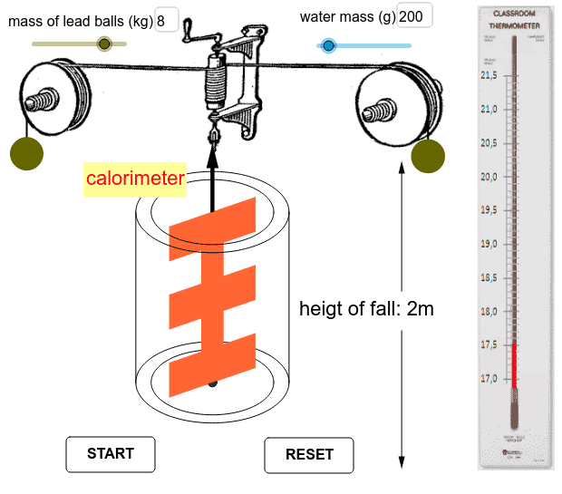

Overview
James Prescott Joule, an English physicist, made groundbreaking contributions to thermodynamics by discovering the mechanical equivalent of heat. Through meticulous experiments in the 1840s, Joule demonstrated that heat and mechanical work are forms of energy and can be converted into each other. This finding was crucial in establishing the principle of conservation of energy.

Joule's Experiment Apparatus
Joule's experiments involved the use of a paddle wheel rotated in water, where he observed that mechanical work done on the water increased its temperature. His work laid the foundation for the first law of thermodynamics and fundamentally changed our understanding of energy transfer and conservation.
Video Explanation
Watch this video to learn more about Joule's Experiment :
Further Reading
Quiz
Test your understanding of Joule's discoveries:
- 1. What did Joule demonstrate about the relationship between heat and mechanical work?
- 2. How did Joule's paddle wheel experiment contribute to the first law of thermodynamics?
- 3. Why is Joule considered a pioneer in energy conservation?